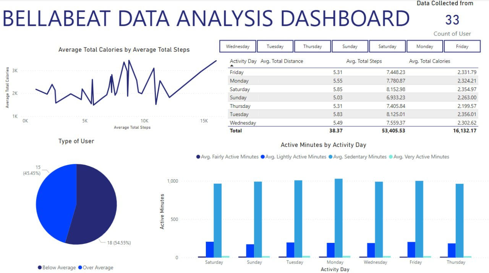
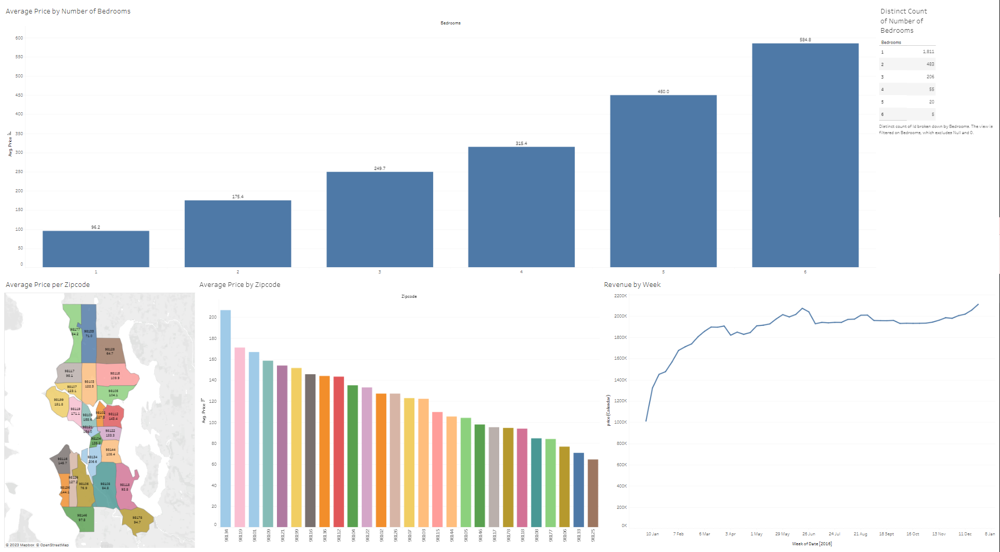
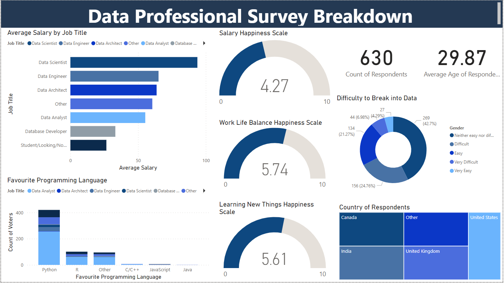

I'm a former mechanical engineer who's shifting gears into the data analytics field. I bring practical experience
and skills in Excel, Microsoft Power BI, SQL, Tableau, Python, and R. My background in mechanical engineering has honed
my analytical mindset, and I'm eager to apply these skills to make meaningful contributions in the data analytics domain. Let's
connect and explore how I can bring my unique perspective and expertise to your team.

This is the capstone project for Google Data Analytics Professional Certificate. In this project, I used R studio to analyze the data and Power BI to create dashboard

This is the Airbnb Tableau project where I create a dashboard to understand the trend of Airbnb rental in the US.

This is the Data Professional Survey Project that I cleaned and visualized using Power BI.

This is the Nashville housing data cleaning project in SQL. In this project, I used SQL queries to combine tables and standardize formats for
better uniformity. The cleaned dataset now provides a more accurate foundation for analysis and visualization of Nashville housing trends.

This is the Covid-19 data exploration in SQL. In this project, I delved into exploring COVID-19 data, specifically focusing on cases, death rates, and vaccination rates.
The SQL-driven exploration allowed for efficient querying and provided valuable insights into the dynamics of COVID-19.

In this project, I built a BMI calculator which is used to measure body fat based on height and weight.
{kind=link}
{kind=link}
{kind=link}